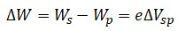
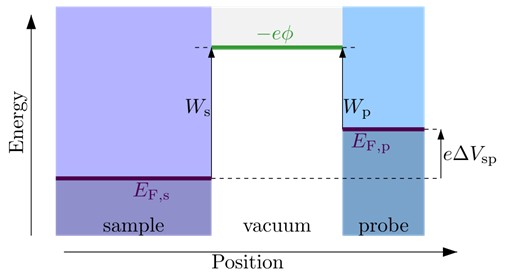
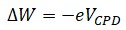
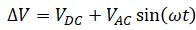
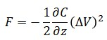
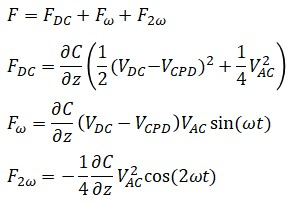

|
理论
|
开尔文探针力显微镜（KPFM）是一种在纳米尺度上测定表面功函数的AFM模式。该技术利用样品表面与探针之间的电场。电压 ΔVsp 需要调整到使梯度 Φ 平坦且电场消失的值（图1）。在这种情况下，以下方程成立，其中 Ws 是样品的功函数，Wp 是探针的功函数。


图 1：能量图（来源：https://en.wikipedia.org/wiki/Work_function）
功函数之间的差异也可以这样表示，其中 VCPD 称为接触电位差：

要使用AFM探针作为探头测量功函数，需要在探针和样品之间施加电压。该电压由直流偏压 VDC 和交流电压 VAC sin(ωt)（频率 ω） 组成。探针和样品之间的总电位差为

电容器中的静电力可以通过对能量函数关于元件间距求导来得出，可以写为

其中 C 是电容，z 是间距，V 是电压，均为探针与表面之间。代入之前的电压公式（V）表明，静电力可分解为三个分量，因为作用在探针上的总静电力 F 在频率 ω 和 2ω 处具有频谱分量。

直流分量 FDC 贡献于形貌信号，特征频率 ω 处的项 Fω 用于测量接触电位，分量 F2ω 可用于电容显微镜。如果电压施加到探针上，则上述公式有效。如果电压施加到样品上，则 VCPD 是加而不是减。
更多信息